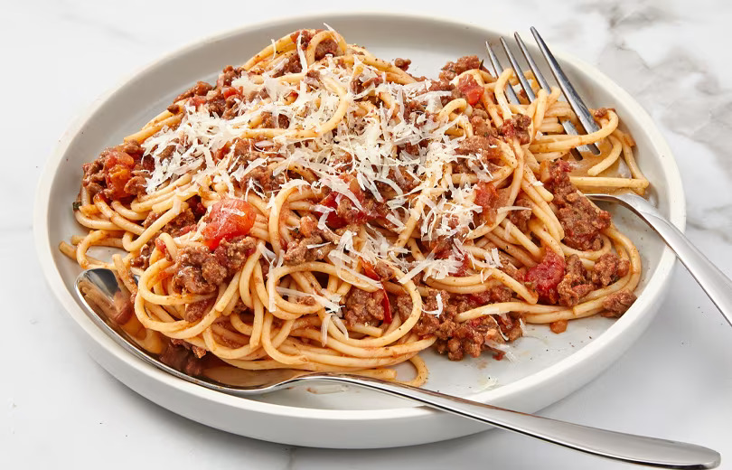

Spaghetti Recipe

Classic Spaghetti Bolognese is a timeless Italian dish featuring al dente spaghetti topped
with a rich meat sauce of ground beef, onions, and tomatoes, seasoned to perfection.
Ingredients:
- Ground Beef
- Onion
- Garlic
- Tomato Paste
- Crushed Tomato
- Dried Oregano
- Salt and Pepper
- Spaghetti
- Grated Parmesan Cheese
Steps:
- In a pan, sauté onions and garlic. Add ground beef, cook until browned.
- Stir in crushed tomatoes, tomato paste, oregano, salt, and pepper.
- Boil spaghetti according to package instructions. Drain.
- Toss cooked pasta with the sauce. Serve with grated Parmesan.
- Enjoy your classic spaghetti Bolognese!
Homepage